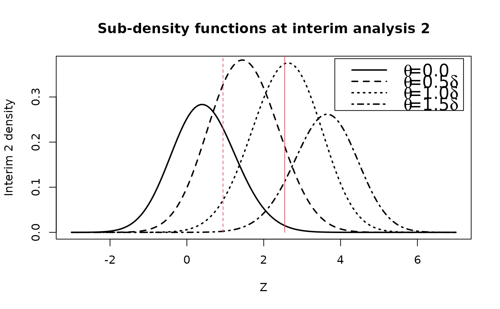
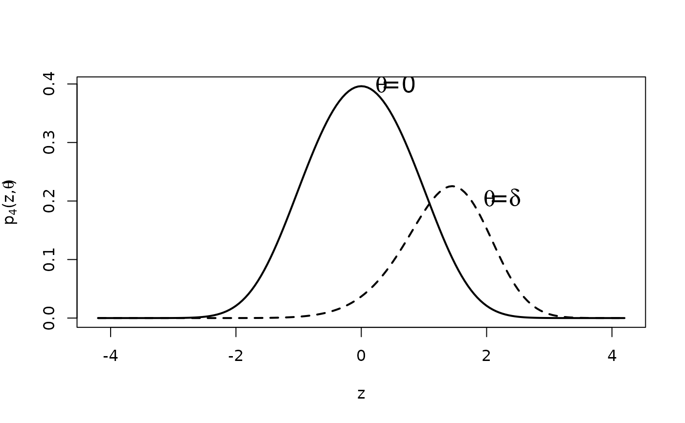

Given an interim analysis i of a group sequential design and a vector
of real values zi, gsDensity() computes an interim density
function at analysis i at the values in zi. For each value in
zi, this interim density is the derivative of the probability that
the group sequential trial does not cross a boundary prior to the
i-th analysis and at the i-th analysis the interim Z-statistic
is less than that value. When integrated over the real line, this density
computes the probability of not crossing a bound at a previous analysis. It
corresponds to the subdistribution function at analysis i that
excludes the probability of crossing a bound at an earlier analysis.
The initial purpose of this routine was as a component needed to compute the
predictive power for a trial given an interim result; see
gsPP.
See Jennison and Turnbull (2000) for details on how these computations are performed.
Arguments
- x
An object of type
gsDesignorgsProbability- theta
a vector with \(\theta\) value(s) at which the interim density function is to be computed.
- i
analysis at which interim z-values are given; must be from 1 to
x$k- zi
interim z-value at analysis
i(scalar)- r
Integer value controlling grid for numerical integration as in Jennison and Turnbull (2000); default is 18, range is 1 to 80. Larger values provide larger number of grid points and greater accuracy. Normally
rwill not be changed by the user.
Value
- zi
The input vector
zi.- theta
The input vector
theta.- density
A matrix with
length(zi)rows andlength(theta)columns. The subdensity function forz[j],theta[m]at analysisiis returned indensity[j,m].
Note
The gsDesign technical manual is available at https://keaven.github.io/gsd-tech-manual/.
References
Jennison C and Turnbull BW (2000), Group Sequential Methods with Applications to Clinical Trials. Boca Raton: Chapman and Hall.
Author
Keaven Anderson keaven_anderson@merck.com
Examples
library(ggplot2)
# set up a group sequential design
x <- gsDesign()
# set theta values where density is to be evaluated
theta <- x$theta[2] * c(0, .5, 1, 1.5)
# set zi values from -1 to 7 where density is to be evaluated
zi <- seq(-3, 7, .05)
# compute subdensity values at analysis 2
y <- gsDensity(x, theta = theta, i = 2, zi = zi)
# plot sub-density function for each theta value
plot(y$zi, y$density[, 3],
type = "l", xlab = "Z",
ylab = "Interim 2 density", lty = 3, lwd = 2
)
lines(y$zi, y$density[, 2], lty = 2, lwd = 2)
lines(y$zi, y$density[, 1], lwd = 2)
lines(y$zi, y$density[, 4], lty = 4, lwd = 2)
title("Sub-density functions at interim analysis 2")
legend(
x = c(3.85, 7.2), y = c(.27, .385), lty = 1:5, lwd = 2, cex = 1.5,
legend = c(
expression(paste(theta, "=0.0")),
expression(paste(theta, "=0.5", delta)),
expression(paste(theta, "=1.0", delta)),
expression(paste(theta, "=1.5", delta))
)
)
# add vertical lines with lower and upper bounds at analysis 2
# to demonstrate how likely it is to continue, stop for futility
# or stop for efficacy at analysis 2 by treatment effect
lines(rep(x$upper$bound[2], 2), c(0, .4), col = 2)
lines(rep(x$lower$bound[2], 2), c(0, .4), lty = 2, col = 2)

# Replicate part of figures 8.1 and 8.2 of Jennison and Turnbull text book
# O'Brien-Fleming design with four analyses
x <- gsDesign(k = 4, test.type = 2, sfu = "OF", alpha = .1, beta = .2)
z <- seq(-4.2, 4.2, .05)
d <- gsDensity(x = x, theta = x$theta, i = 4, zi = z)
plot(z, d$density[, 1], type = "l", lwd = 2, ylab = expression(paste(p[4], "(z,", theta, ")")))
lines(z, d$density[, 2], lty = 2, lwd = 2)
u <- x$upper$bound[4]
text(expression(paste(theta, "=", delta)), x = 2.2, y = .2, cex = 1.5)
text(expression(paste(theta, "=0")), x = .55, y = .4, cex = 1.5)
